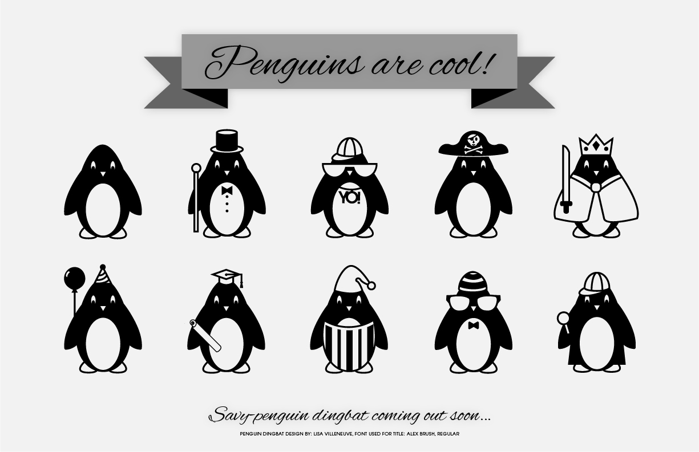

Recent Projects
SPRING 2014: For six weeks, I did some fieldwork where I worked mainly on responsive website layouts.
SUMMER 2013: This past summer helped with some promotional material including some logo work and poster layouts.
NOVEMBER 2012: I took and edited photographs for a digital gallery of a private art collection. Each painting had to be taken off the wall and photographed individually. After the photographs were uploaded on a computer, I edited them in Photoshop to remove dust spots and reflections. For some of them, the colour had to be adusted so the digital versions had a closer colour match to the originals.
SUMMER 2012: I was the Creative Art Director for a non-profit summer daycamp at Arlington Woods Free Methodist Church where I had to plan out every step of the process, keep production costs low, and direct a group of people in the design of the set and decor for the camp. I was one of the photographers, and at the end of the week, I made a camp DVD for the families to take home.